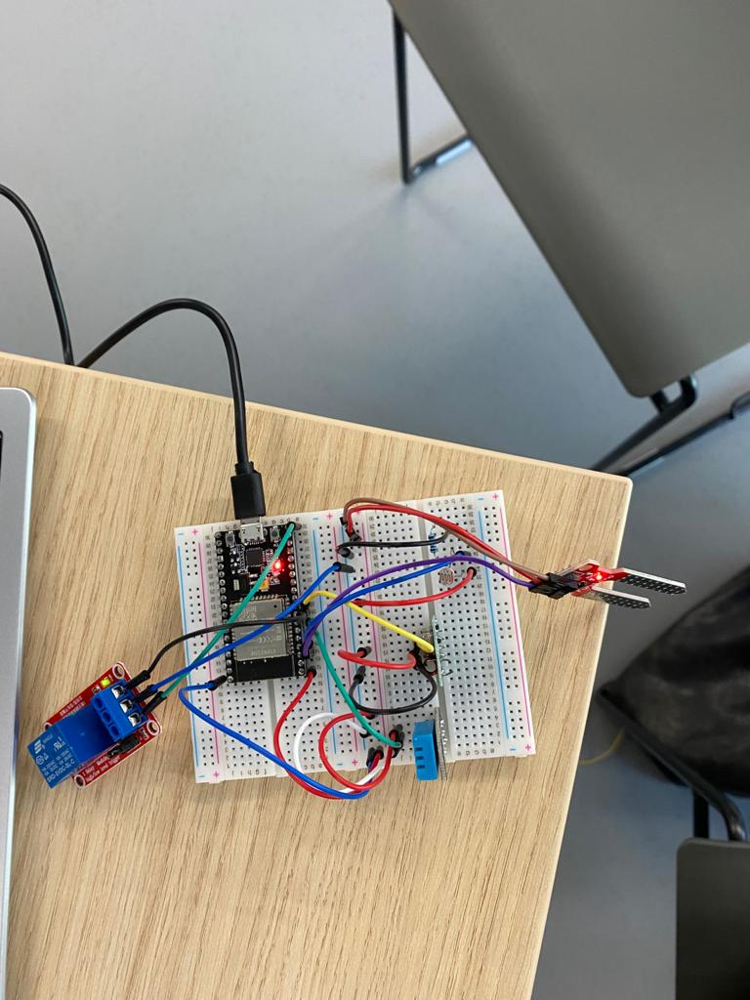

Smart Technology
IoT schakeling
Nadat we een printplaat hadden ontworpen en alle gegevens in visual studio code hadden gezet, hebben we de ontworpen PCB’s ontvangen. Die konden we gaan solderen. De pin headers hebben we op het PCB gesoldeerd, zodat het ESP erop pastte. Ook hebben we de pin headers voor het relay, de moisture sensor, DHT sensor en de RF transmitter gesoldeerd.
Ik had geen ervaring met solderen, één keer in de brugklas een soldeerles gehad tijdens beeldende vorming maar dat is al meer dan 10 jaar geleden. Het was even wennen hoe ik de tang en soldeertin moest vasthouden, maar het lukte me best goed. Ik kon netjes op de pin headers solderen, zonder dat deze in elkaar overliepen.
Zoals op bovenstaande filmpjes is te zien, is het ons gelukt om de schakeling werkend te krijgen. Ook heb ik een filmpje van de werkende Blynk-app toegevoegd. We hebben het getest door de sensor in een bakje met water te leggen, zodra we de sensor uit het bakje met water haalde ging de iot schakeling water pompen naar de plant.
Nu volgen er foto's die ik tijdens de les heb gemaakt.



Lessen technology
tijdens de lessen van technology leerden we geleidelijk coderen met arduino op visual studio code. Het begon met het schakelen van een led lampje op de printplaat. We leerden alle componenten op de ESP kennen.
Daarna gingen we aan de slag met het toevoegen van meerdere componenten op de printplaat. Het gaat hier over de moist sensor, RF, transmitter, het relay, DHT sensor en LDR. In Platform IO voerden we codes in om deze te programmeren. Naast mij hadden andere mensen ook moeite met dit deel. Veel klasgenoten hadden hier geen ervaring mee, dan is het heel veel informatie om in een keer te onthouden. Mathijs, Roel en de ICT-klasgenoten waren gelukkig heel behulpzaam!
Vervolgens gingen we bezig met de Blynk-app. Dit is een app op je telefoon waar alle gemeten waarden op komen te staan. Als de luchtvochtigheid omlaag ging was dit op de app te zien. Ook kon je met de app het LED-lampje aan- en uitzetten.
Hierna gingen we aan de slag met het maken van een ontwerp voor het fysieke PCB in het programma Eagle. Hier heb je je eigen board in het programma nagemaakt
Reflectie op IoT schakeling
Na het maken van de schakeling en alle technology lessen heb ik veel nieuwe dingen geleerd waar ik voor ik aan deze minor begon nog nooit van had gehoord. Nu heb ik er meer verstand van en ik vond het leuk om na te denken over hoe ik dit in een business context kan plaatsen. Ik vond het leuk om het plantensysteem vanaf het begin op te bouwen. Ik had wel veel hulp nodig van Mathijs en klasgenoten, maar gelukkig waren zij geduldig met me. Mathijs zei zelfs een keer dat mijn ESP omgekeerd zat en ik bijna kortsluiting had veroorzaakt. Het was een leuk gevoel als er telkens iets werkte wat je programmeerde of soldeerde. Het is leuk dat er bij de technology lessen meteen een uitkomst komt bij de geprogrammeerde onderdelen, hierdoor raakte ik gemotiveerd.
Toepassing voor IoT-schakeling op Business Case
De schakeling die we hebben gemaakt reageert op de vochtigheid van de aarde, de temperatuur en weet zo wanneer de plant water nodig heeft. Niet alle planten hebben evenveel water nodig, dit kan heel verschillend zijn. Zo hebben bananenplanten veel water nodig, omdat die een tropisch klimaat gewend zijn. Olijfboompjes hebben daarentegen minder water nodig, maar kunnen niet in de kou staan. Als mensen dit handmatig per verschillende plant moeten bijhouden en registreren, kost het veel werk. Dit kan geautomatiseerd worden dankzij de IoT-schakeling.
Neem bijvoorbeeld een plantenmuur of losse planten die in een kantoorpand of school staan. Zoals bij het Smartty project is gebleken, zal een goede luchtkwaliteit helpen bij het verlagen van het ziekteverzuim en zal er ook voor zorgen dat mensen minder snel ziek worden. Dit is zeker in tijd van corona belangrijk voor bedrijven. Zo kunnen organisaties hun medewerkers (of studenten) met een geruster gevoel naar kantoor/school laten komen.
Als de kantoorpanden of scholen grote gebouwen zijn, kost het veel tijd om per plant te kijken hoeveel water deze nodig heeft. Ook kost het veel tijd om te onthouden welke planten hoeveel water nodig hebben en in wat voor temperaturen deze wel of niet overleven. Dit kan opgelost worden door voor de soorten planten de waarden in te voeren waarbij zij aandacht nodig hebben. Als bijvoorbeeld de vochtigheid van de aarde onder een bepaald getal komt kan er een signaal via de Blynk app (of andere applicatie) doorgegeven worden aan de persoon die verantwoordelijk is voor de planten. Zodra die persoon het signaal krijgt, zorgt deze persoon ervoor dat de planten de juiste verzorging krijgen. Dit kan alsnog chaotisch worden, omdat de vochtigheid van de grond van de planten niet op hetzelfde moment aandacht nodig heeft.
Een oplossing voor dit probleem is dat het water automatisch wordt gegeven aan de planten. Het water komt bij de planten door buisjes waar water doorheen komt per plant aan te sluiten. Dit is een irrigatiesysteem waarbij er per plant precies genoeg water wordt gegeven. Hiermee voorkom je dat de ene plant meer water krijgt dan de andere.
Nog een plek waar dit systeem toegepast kan worden is bij bijvoorbeeld een kas, of plantjeswinkel. Mijn groepsgenoot Sjoerd werkt bij een bedrijf dat bomen verkoopt, deze bomen staan jaren te groeien en hebben ook de juiste verzorging nodig. Het scheelt bedrijven een hoop tijd als het bewaterings- en verzorgsysteem geautomatiseerd is met een irrigatiesysteem die aan een app gekoppeld is waarbij je precies kan zien welke waarden alle plantjes/bomen hebben. Voor planten/bomen die in een speciaal klimaat groeien, zoals een kas bijvoorbeeld waar de luchtvochtigheid hoog is, is het ook fijn dat de luchtvochtigheid heel precies gemeten kan worden.
Hieruit kan ik concluderen dat de IoT-schakeling op verschillende manieren en met verschillende doelen toegepast kan worden. Voor bedrijven die er tijd mee winnen zou dit een goede investering zijn.